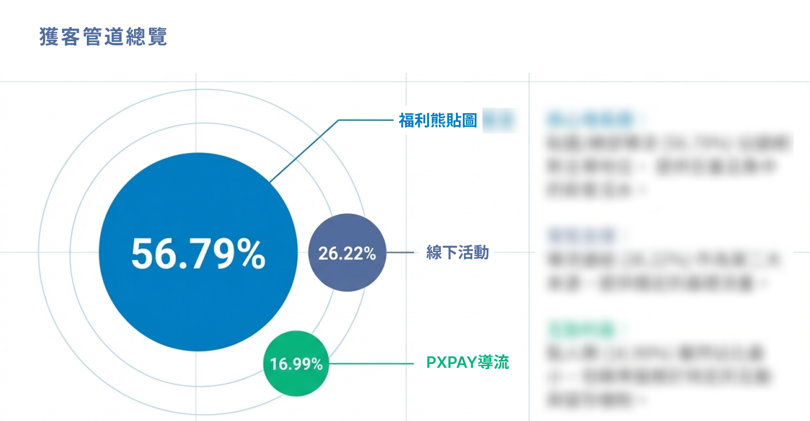
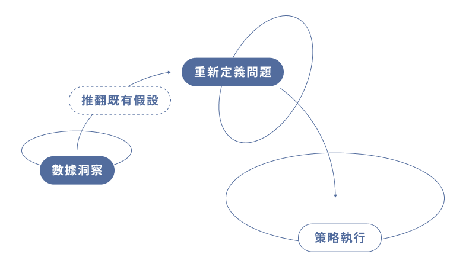
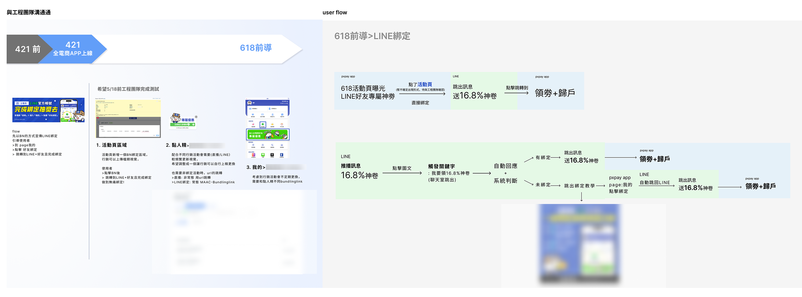

在資源有限、系統分散的限制下重新定義綁定路徑，四個月將 LINE 好友綁定率從 13% 拉升至 42%，建立全聯電商首個可規模化的精準再行銷基礎建設。
全聯全電商 LINE 官方帳號是連結線上流量與線下消費的關鍵橋樑。但在專案啟動前，LINE 好友數與電商 App 會員（MID）之間存在嚴重的 Data Silo——兩個系統各自為政，推播訊息無法依消費行為個人化，導致轉換率低、封鎖率高，大量行銷預算在「廣播式推播」中被稀釋。
外部 LINE 標籤與內部交易數據無法串接，推播就像對著空氣說話——我們知道有人在，但不知道他是誰。
IT 夥伴擔任 Scrum Master，負責 How & Process。明確的職能分工讓我專注在需求定義、優先級排序與跨部門溝通（IT、行銷、外部廠商 MAAC）。

分析非貼圖宣傳期的好友來源後發現：多數新加入者其實來自 App 導流——他們本來就是既有會員、已有 MID，根本不需要重新註冊。

從「拉新」轉向「盤活既有」。一個有 MID 的綁定會員，數據價值遠高於十個無法識別的匿名好友——Quality 比 Quantity 更重要。
Friction 比 Incentive 更值得優先解決
使用者不是沒有需求，而是流程中的阻力太多、理解成本太高。減少一個步驟，往往比增加一個誘因更有效——這個洞察改變了我看待用戶轉換的方式。也讓專案有了清楚的節奏：
在全電商後台新增「綁定組件區域」，不做一次性活動頁，而是建立可複用模組。
向內部爭取「LINE 好友專屬折扣預算」，用折扣作為 hook 驅動 App → LINE 的轉換。
將目標依電商檔期拆成三個 Phase，每個里程碑都有可驗證的成果，避免一次上大功能的風險。
與 IT 協作優化 OAuth 授權機制，讓用戶從 App 點擊後無需重複輸入帳密，直接完成 LID × MID Mapping。

關鍵在於：好友數同期成長 2.3 倍（62K → 141K）的情況下，綁定率仍持續提升。這說明成果不只是流量自然增長，路徑優化是真實有效的——我也誠實看待這點：好友數的成長確實有檔期曝光的自然效果，但「率」從 13% 提升到 42% 是路徑優化的真實信號，而不只是分子變大。
這段經歷讓我確認，自己想做的不只是「推動活動成效」，而是更前端地參與產品策略與使用者流程設計。
最有成就感的，不是最終的數字成長，而是把原本混亂、模糊的目標重新整理成可以被執行的流程，並在大量限制下找到真正能落地的方法。
我喜歡在混亂中找結構、從使用者行為中找問題，並透過跨部門協作一步步把事情推動落地。這段經驗讓我更確定自己想往 Product Manager 方向發展。